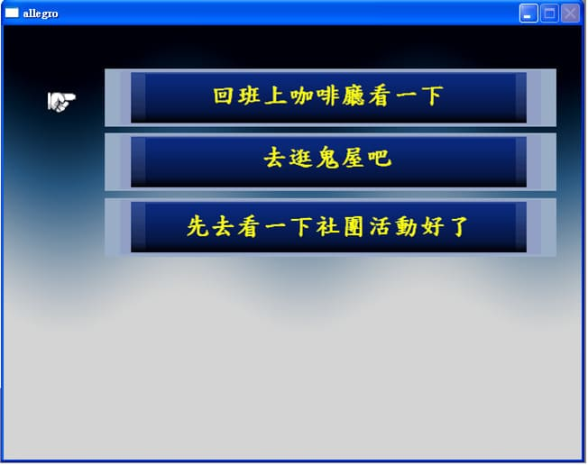
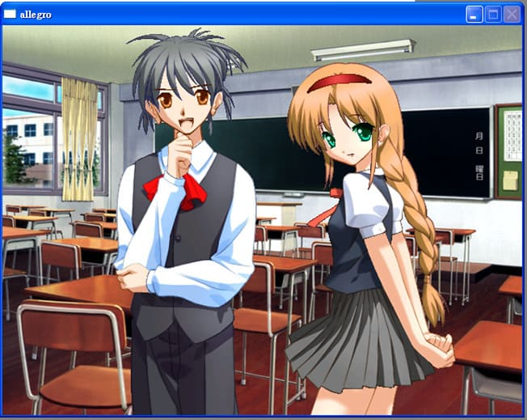
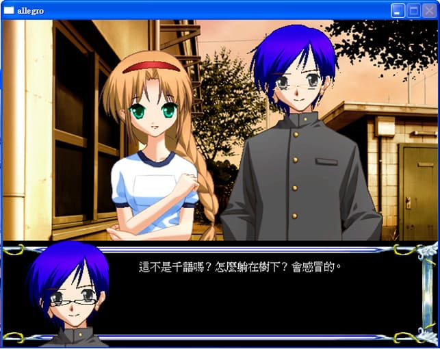
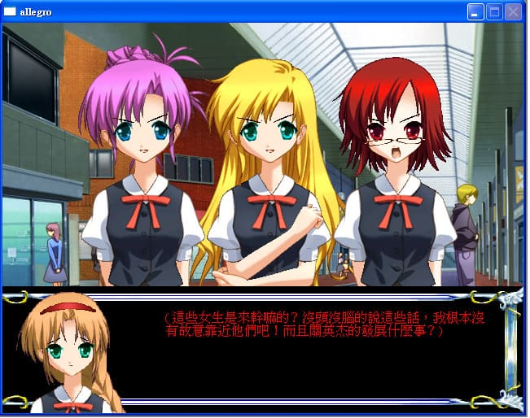
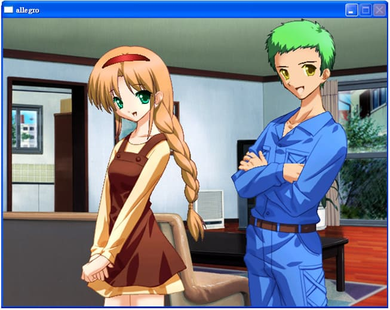
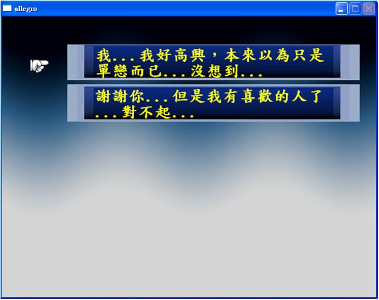

秋之狂響試玩版 |
|
這部遊戲可以說是一切的起點，是我正式踏上遊戲製作的第一步吧！ 以前並沒有玩過所謂的戀愛遊戲，所以在老師提出期末專題是遊戲的時候，我第一個反應是RPG，不過同組的夥伴想了想，提議做起戀愛遊戲(ADG)，因此這款秋之狂響就出爐了。他是由之前提到過的那位老師介紹的函式庫──allegro來撰寫的，老師的本意是要我們練習C語言，做遊戲只是為了增加趣味性，總之，對遊戲製作尚且懵懂的我就這樣踏了出去。 話不多說，先來介紹遊戲： 這款遊戲的主體為戀愛遊戲(ADG)，以女主角的角度出發，採第三人稱視角，並附有旁白解說，一共分為七幕，前兩幕單純是劇情，中間四幕可以掌控好感與對象，最後一幕則是結局選擇；每位男性有三個結局，True Ending、Good Ending和Bad Ending。 其實這是一個試玩版，當初還在摸索的時候，很多的功能並不完善，加上我們並沒有美術專長的人，我當初匆匆的寫了劇本，然後利用RPG戀愛製作大師做了角色的樣子，七荒八亂的做出來。在當初的預想裡面，正式版會具有開始畫面、進度儲存、遊戲說明、離開遊戲、回憶錄以及幕後花絮等功能，只是到現在還沒有實踐就是。 好吧！他就是個不受寵的孩子，連最初的試玩版也做得很陽春。 接下來大概介紹一下故事： 白千語(女主角)是一個剛升高二的女孩，在開學的第一天不小心遲到，撞到了學生會長吳洛維，結果不小心遺落的袋子，下午青梅竹馬的高英傑陪她去找卻找不著，後來去打工的時候又倒楣的被同班的花花公子李昱給撞上，李昱說幫千語保密的代價就是要千語當他的女朋友... 過不久後，就是校際活動，千語進而和三位男主角展開了一連串的糾葛。 當初的遊戲畫面截圖：
支線的選擇

在文化祭上，千語碰到了李昱

教學樓外，千語碰到了洛維

非常俗套的遇上了一群女生的霸凌

在客廳內，英傑緩緩地說出了請求

最終的抉擇
 因為是課程作品，我們並沒有很多的時間去完善她，所以圖片的部分我基本上是由RPG戀愛大師的繪圖功能設計輸出，同時程式撰寫的構想也是由RPG戀愛大師與RPG製作大師這兩部軟體所啟發。 當初遭遇的最大困難，其實是文字輸出的部分，後來我直接拿學長之前做的函式來使用，那時候學期都結束了，作業還沒到繳交期限，因為沒宿舍住，所以就回家去了，在Dead Line的時候，甚至做到半夜兩點多，但是還不是很滿意，尤其是我們分工的地方，沒有辦法讓他看起來不要太突兀，就匆匆地交了作業。 現在想起當初青澀的程式和故事，都會有一種如果可以穿回過去，除了要先把寫出這遊戲的自己幹掉之外，還要把CODE全部重寫的感覺。 過了這麼久，這部遊戲應該也不會重新啟動了，就一直讓她活在我心中就好了，所以就寫了這篇做個紀念。 |
| by 陌阿柳 |